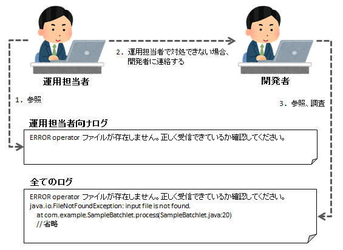
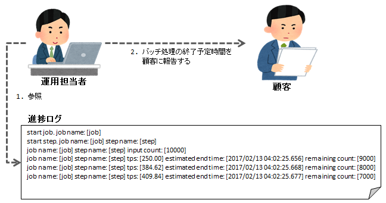

4.1.4.10.1. 運用方針¶
Jakarta Batchに準拠したバッチアプリケーションでは、以下の方針に従った障害監視、ログ出力方針を推奨している。
- 障害監視 はバッチの終了ステータスで行う。
- 取り込みファイルが存在しない等の予期できる障害発生時のリカバリ用に、運用担当者向けログを出力する。
- アプリケーションの不具合等の予期できない障害発生時の調査用に、全てのログを出力する。 例外発生時のログ出力に関しては、 例外(エラー含む)発生時の処理の流れ を参照。
- バッチ処理の遅延時に終了時刻を予測するため、進捗ログを出力する。
これらの方針に従うことで以下のメリットが得られる。つまり、障害発生時や顧客の問い合わせ対応に対して運用担当者のみで対応できることが増え、開発者の運用負荷の軽減が期待できる。
- 障害発生時に運用担当者向けログにリカバリ手順を出力しておけば、運用担当者がリカバリを行うことができる。
- 進捗ログを出力しておけば、開発者が別の手段で進捗状況を確認する必要がなくなり、 運用担当者は進捗ログを参照して終了予定時間を顧客に回答できる。
重要
バッチの設計者は、予期できる障害とその対処方法を洗い出し、 運用担当者向けログ に出力するようにバッチを設計すること。
- 障害検知時のログ参照イメージ
- 
- バッチ処理遅延時のログ参照イメージ
- 
4.1.4.10.1.1. 障害監視¶
バッチの終了ステータスをもとに障害監視する。 詳細な情報が必要な場合はログを参照する。
- 正常終了
- バッチ処理が正常に終了したことを意味する。
- 異常終了
- バッチが何らかの理由で異常終了し、後続のジョブが実行できないことを意味する。 運用担当者はログを参照し、障害対応する必要がある。
- 警告終了
- バッチ実行中に何らかの問題が発生したが、後続のジョブは実行できることを意味する。 運用担当者はログを参照し、発生した問題の内容を確認する必要がある。
バッチアプリケーションの終了ステータス(Javaプロセスから戻されるリターンコード)の詳細は、 JobExecutor 及び Main を参照。
補足
終了コードを上記より細かく分類したい場合には、起動クラス(Main)を作成し対応すること。
4.1.4.10.1.2. ログの出力方針¶
- 運用担当者向けログ
- 発生した障害とそれに対する対処方法を記載したメッセージを出力する。 運用担当者は、このログに出力された情報を元に障害対応する。 詳細な情報(スタックトレース)は運用担当者には不要なため、出力しない。 詳細は、 運用担当者向けのログ出力 を参照。
- 進捗ログ
- バッチ処理の進捗状況を出力する。 バッチ処理が遅延している場合などは、このログを元に現在の処理の終了を予測し、続行や停止を判断する。 詳細は、 進捗状況のログ出力 を参照。
- 全てのログ
進捗ログを除く全てのログを出力する。運用担当者向けログに対応した詳細情報(スタックトレース)も、このログに出力する。